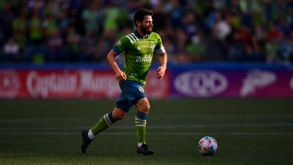

Esportes Favoritos

Introdução
Eu sempre me considerei muito competitivo e apaixonado por esportes, sejam eles radicais ou mais "Relaxs". Desde sempre fui muito ativo. Com exceção do período de isolamento da pandemia. Abaixo listarei os esportes que mais gostos.
Listagem na ordem que eu prefiro:1 Futebol
O primeiro esporte não tinha como ser outro, sou apaixonado por esse esporte a muito tempo. Pra mim futebol é mais que um jogo. Gosto de estar sempre por dentro do que acontece nesse mundo. Meu time favorito é o Santos FC. Porém, eu não assisto muitos jogos do futebol nacional, com excessão dos da seleção, claro. Eu gosto muito do futebol europeu, que é o onde estão principais craques do mundo, principalmente os brasileiros. Sempre que posso assito jogos de ligas como a Premier League, Liga Santander, Bundesliga e, obviamente, da Champions League. Desse esporte eu pratico, assisto e jogo suas versões eletronicas.
2 UFC
O segundo esporte que mais gosto ATUALMENTE é o UFC. Esse gosto começou em 2020, que foi quando eu conheci a história e comecei a admirar o lutador brasileiro Charles "Oliveira" do Bronx. Por motivos óbvios eu nunca pratiquei esse esporte. Já joguei a sua versão eletrônica, porém faz muito tempo.
3 Rodeio
Esse esporte eu também nunca pratiquei até o presente momento. Comecei a companha-lo ainda nesse ano, graças a uma série da Netflix denominada "Fearless – 8 Segundos para a Glória". Ele é o primeiro da lista da catergoria de esportes radicais, que embora não tenha praticado nenhum ainda eu pretendo no futuro. Meus peões favoritos são os brasileiros: José Vitor Leme, Kaique Pacheco e João Ricardo Vieira.
4 Volei
Esse esporte eu não acompanho tantos jogos. Com exceção das olimpíadas. Porém, eu sempre o pratiquei, seja na escola ou com a familía.
4 Motocross
Esse esporte eu não o pratico nem o acompanho ainda. Porém, eu gosto bastantes de motos e é um esporte radical que não está tão distante da minha realidade. O gosto também veio a partir de jogos eletronicos. E claro, não podeira faltar algum representante de corridas.